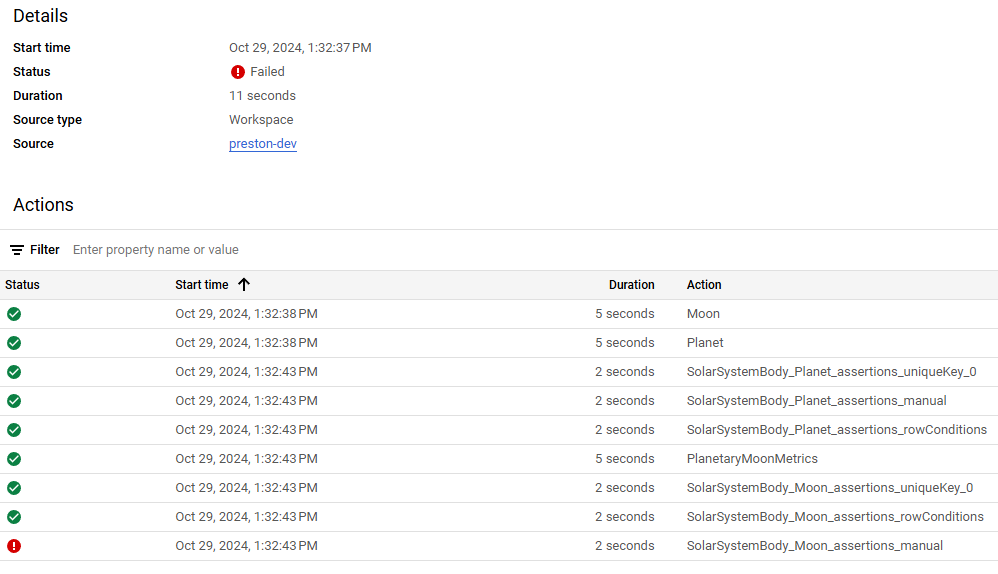

Data Extraction & Load
Every day using a GitHub actions workflow, raw planetary and moon data are extracted from a Solar System API and then loaded directly into BQ without transformation.
Data Transformation
These raw data are then transformed and refreshed daily using BQ and Dataform, which is a data transformation service that enables:
- Development
- Testing
- Version control
- Scheduling
- Managing Dependencies
- Manage table and field descriptions (Data Dictionary)
Dataform, which syncs directly with a GitHub repository (repo), allows us to have separate development and production environments in BQ, which enables testing, code management, and production-level protection.
Dataform also allows us to schedule our transformation cycle to refresh daily. We can schedule this to run every day after our extract/load refresh in our GitHub repo. To do this:
- We create a release configuration, which refreshes the compilation of our Dataform repo to reference most recently merged update in the production branch of our GitHub repo
- We create a workflow configuration to schedule the Dataform repo to refresh all production tables, views, and assertions (discussed in the next section)

Data Quality & Monitoring
Data Quality
Dataform allows us to pass assertions directly within a table's script or manually, through a separate script for more complex data quality rules. This allows us to protect our transformation pipeline should any unexpected errors occur when validating the conditions for each table.
For example, in our Moon and Planet tables, we have specified that each table a unique key and non-null field for both tables, MoonId and PlanetId, respectively.
Should either of these validations fail, the metrics table that depends on these tables would not update, which protects the analytics data layer. Manually created assertions do not interrupt or impede the cycle, however. So if these validations fail, the pipeline will still run.
For example, for our moon data, we do not have values for many of the physical data fields for moons. This is expected, and so because of this it is better to remove those assertions or just disable the manual assertions to prevent unnecessary failure notifications, which will be covered next.
Data Monitoring
Dataform allows us to directly monitor anything we run in the repo. This could be:
- A single table as we develop in the dev environment
- A set of actions, say I want to run all actions tagged to 'SolarSystemBody' - the full dependency tree associated with this tag would run
- All actions in our dev or prod environments (manually or scheduled)
We can use the workflow execution logs to monitor all these runs and if there are any errors, we can investigate the cause:
Example of a failed run:
As mentioned before, given that we do not need to monitor the manual assertions to check data quality for our Moon dataset, let's disable this script so it will not error our future runs (even though the run still completed successfully, just the manual assertion failed - this will add noise to our runs if we leave enabled. In a normal situation, these assertions would be monitored and the data corrected as opposed to just turning off the data quality checks).
And after disabling, we see that our next full production cycle, does not have any errors:
Data Analytics
The final table in our pipeline is PlanetaryMoonMetrics which is a dataset created specifically to enable analytics by calculating specific metric values and adding dimensions, both of which would empower data visualizations and reports.
Data Dictionary
It was mentioned in the first section that Dataform also allows for management of table and field descriptions, which will be reflected in the tables themselves in BQ. This is done by entering these descriptions in the table's configuration:
Potential Future Enhancements or Considerations
This example was set up to be very simple and streamlined, but this demo could be enhanced in the following ways in the future:
- Add a visualization using Looker (viz tool in GCP) or another application
- Create a more complex data refresh schedule
-
After the GitHub actions workflow completes, use this to start the Dataform cycle, this would require either another workflow or using tools such as:
- Google Cloud Function with Cloud Log Monitoring and Pub/Sub
- Cloud Composer and Airflow
-
Redeveloping this entire pipeline process using other cloud environments or tools like:
- AWS
- Azure
- dbt
- Snowflake